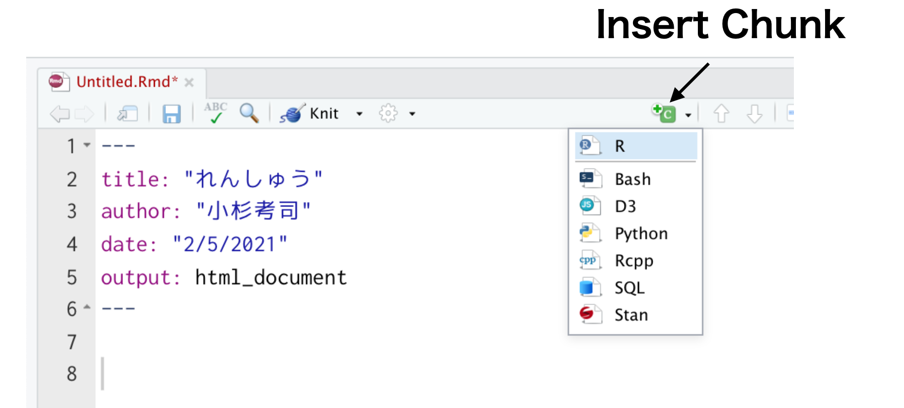
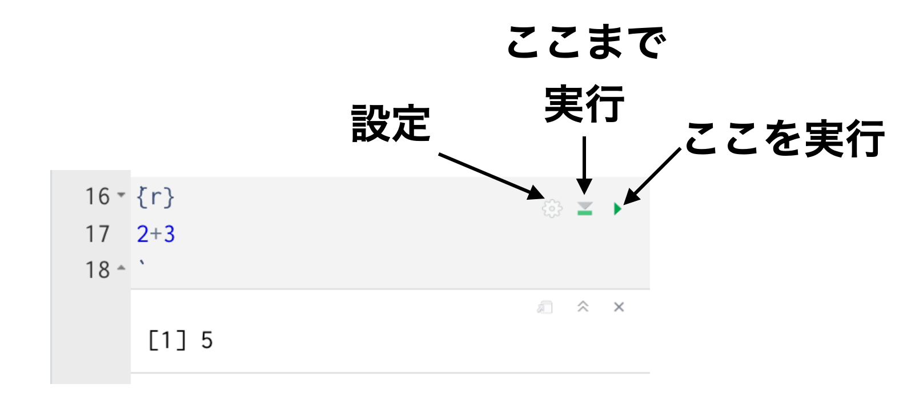
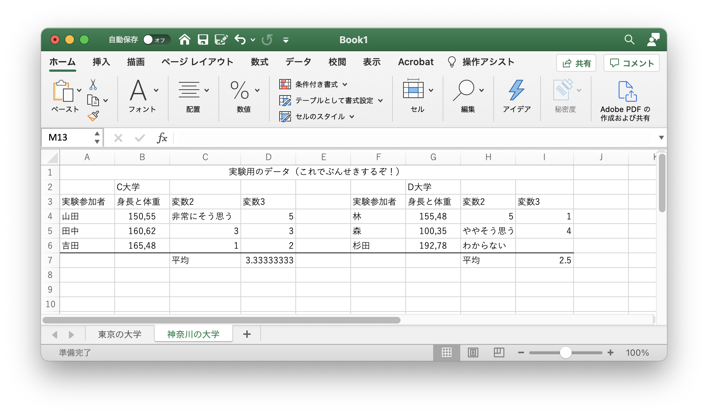
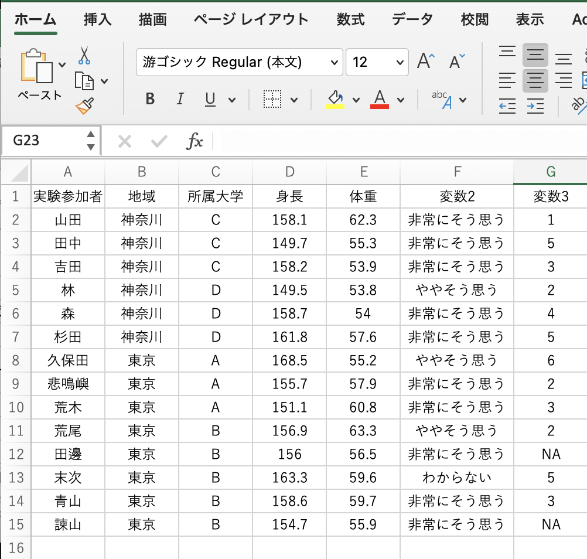
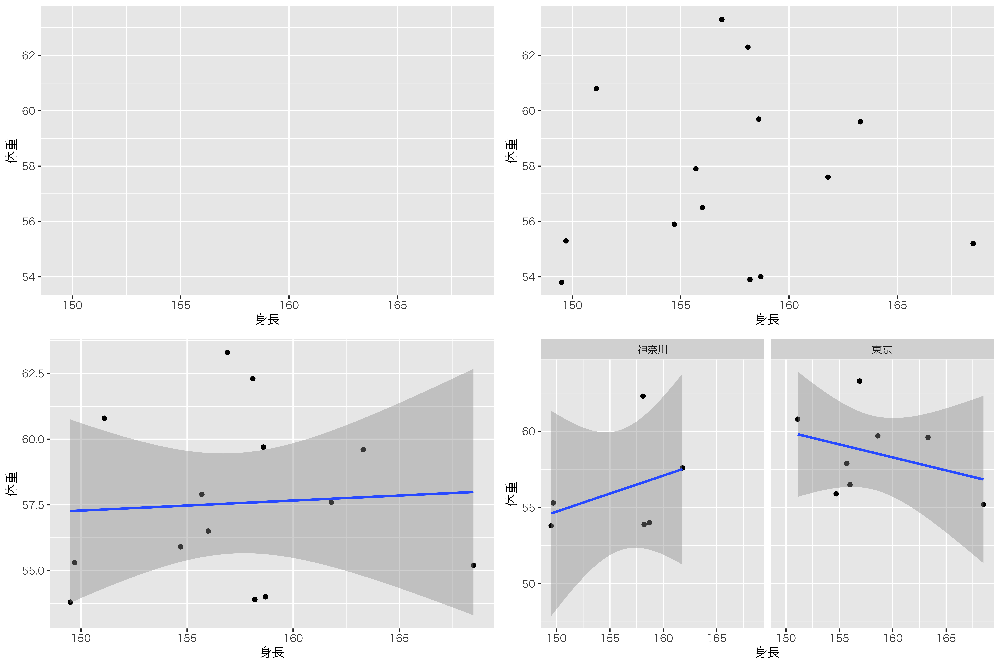

Chapter 25 計算をする
25.1 四則演算
25.1.1 足し算
足し算をします。
2+3## [1] 525.1.2 引き算
引き算をします。
5-2## [1] 3````

Rチャンクを挿入するボタン

チャンクの設定や実行
うまくできましたでしょうか。コードや設定に間違いがあればknitは中断してしまいますが，エラーメッセージを読んで対応しましょう。RMarkdownについて，詳しくは@高橋201805が一冊を使って解説していますし，(紀ノ定201806や?)(kosugi2019なども参考になります?)233。
25.2 グラフの文法
RとRStudioを使って計算し，文書を作成するという基本的な使い方についての概説は以上です。それではこれから，より実践的な演習に入っていきます。
まずはデータをファイルから読み込むこと，そしてそれを描画するグラフの文法について紹介します。
25.2.1 データの読み込みと整理
データが数件しかないのであれば，上で解説した方法でdata.frame型に1つ1つ入力していけば良いのですが，Rのコードでそれを実行するとなると大変です。また実際の研究のシーンであれば，機械が大量にデータをファイルに出力するといったこともあるでしょう。Web調査を行った結果なども，表計算ソフトで利用できる形に出力されるのが一般的です。
ここではそうしたファイルからデータを読み込む方法について説明します。
データファイルを自分で作ることもあるかもしれません。データを手入力してファイルを作る場合は，表計算ソフトを使う方が便利です。このときに注意すべきことは，1つ載せるには1つのデータしか入れないということです。これからデータを色々加工していきますが，加工する前のデータはなるべくプレーンな状態であったほうが良いのです(すでに加工された食材を違う料理に利用するのは大変ですから！)。
図1.13には分析に不向きな，悪いデータファイル作成の例を示しました。これをまずはじっくり眺めて，どこがまずいのか考えてみてください。少なくとも7つの点で問題があります234。

分析に不向きなデータファイル
分析しにくいよくないデータになっているのは次の箇所です。
1行目にこの表のタイトルのようなものが入っていますが，これは分析には使わない情報なので不要です。
1行目はセルを結合しています。データセットは
data.frame型のように矩形であるべきなので，データのサイズを狂わせる行の存在は不適切です。2行目には大学名が入っているようです。AからD列はC大学，FからIはD大学のデータのようですが，1つのデータセットに複数のデータが混在しているのはよくありません。
身長と体重，という変数名のところには1つのセルに複数の数字が入っています。カンマで区切られており，見た目にはわかりますが，機械的には(カンマのせいで)数字ではなく文字列として扱われます。データがデータになっていないのです。
変数2の列は「非常にそう思う」という言葉の回答と，数字が入っています。1つの列の中に複数の種類のデータが含まれるので分析できません(文字と数字の集計ができない。ちなみにこの場合は文字変数として扱われます)。
7行目に平均とありますが，データの平均はデータから計算できる量なので，Rで算出するものです。データの中に計算結果を入れておくべきではありません。
I列6行目，D大学の杉田さんに関する変数3の箇所が空欄です。これはデータが入手できなかったところかもしれませんが，これは欠損値であることを明示すべきです。
「東京の大学」と「神奈川の大学」という複数のシートがあります。データファイルとしては1つのシートにすべての情報が入っていなければなりません。同時に分析できるデータなのであれば，一枚のシートにまとめるべきです。
皆さんはいくつ気づいたでしょうか。これらの問題点を通じて言えることは「1つのデータセット，1つのセルには過不足ない情報を入れる」ということです。表を作って見せるのであればこのような入力でも良いのですが，ここでは数値データを分析することが目的なのですから，レイアウトや数字でない情報，計算してここから作れる情報は，分析に必要のない過剰な情報なのです。ちなみにアンダーラインや文字色，セルの色などは分析の時に自動的に受け落ちます(データではない情報なので)。
加えて分析の時に不便なのは，文字と数字の関係です。1つのセルに複数の数字が入る場合，区切り記号などをつけることが多いかと思いますが(スペースも機械にとっては文字です！)，こうした文字種・変数の種類・水準が混在しているのも情報過多ということになります。
今回の問題点を修正したのが図1.14のようなデータセットです。単一のデータセットで完結しています。また1つの列に一種類の変数，不要な情報はなく，過剰な情報もないデータセットになっているのがわかるかと思います。なお，変数3のところにNAとあるのはNo Answerの略でを意味しています。これは読み込む時に，欠損値をどのような文字にしているか，という指定ができますので問題になりません。

分析に適したデータファイル
このように，データの入力の基本は，1行に1ケースの情報が入っている，過不足のない1つのデータセットを作ることである，と言えます。
このようにして作られたデータファイルは，UTF-8の文字コードによるcsv形式で保存するのが基本です(\(\to\)第\[chapter2\]章\[suffix\]節)。ファイルを保存する時に，ファイル形式をしっかり指定し，拡張子も.csvにしましょう。csvファイルはASCIIファイルですし，文字コードも世界基準のUTF-8にしておけばどのPC空でもみることができます。ある一企業が開発した特定のOS，特定のアプリケーションを持っていなければデータを見ることができない，というのは科学的研究の観点からは不適切なのです。
25.2.1.0.1 データファイルを読み込む
さて，ではデータファイルがプロジェクトの中に保存できたとしましょう。このファイル名をsample.csvとします。このデータファイルを読み込むには，読み込むための関数を使います。Rが持っている基本関数であるread.csv関数を使えば読み込めるのですが，ここではより便利なパッケージの関数を使ってみましょう。
ここではRmarkdownではなく，プレーンなRスクリプトファイルをつくって話を進めます。
FIle > New File > R Scriptから新しくファイルを開くか，先ほどのRスクリプトファイルの下にcode:[code::05_09]のコードを書いて実行してください。
{#code::05_09 .c++ language="c++" label="code::05_09" caption="CSVファイルを読み込む"} library(tidyverse) dat <- read_csv("sample.csv",na = "NA")
- 1行目
tidyverseパッケージを読み込む。次のread_csv関数がこのパッケージに含まれているからです。- 2行目
datオブジェクトに，read_csv関数で読み込むファイルを代入します。関数の第一引数はファイル名，naは欠損値の指定で，NAという文字列を欠損値として扱うことを宣言しています。
このようにすることで，外部ファイルを読み込むことができます。
ここでWindowsユーザの多くがエラーに遭遇します。「資料として配布されたファイルが文字化けして読み込めません」という相談が毎年頻発します。
理由はWindows特有の過保護な親切設計と，いまだに局所的な古い文字コードを使っていることにあります。 資料ファイルはcsv形式でダウンロードして使ってもらうようにしています。こちらは世界標準のUTF-8でエンコードしてあります。 Windowsでこれをダウンロードすると，親切にも「ダウンロードしたら開くよね」といって勝手にExcelで開きます。みなさんもファイルの中身が見られたら安心ですね。でもそれを保存する時に，うっかり中身を触ってしまうようなことがあれば，文字コードを変えて上書き保存してしまいます。これで文字化けします。Excelなどで開かずに，直接Rで読み込むことがポイントです。
また読込の時にエラーが生じるのであれば，WindowsのRにおける文字コードが勝手に日本ローカルに設定されて違う文字コードで読み込んでしまうことになります。
そんな時は読み込み関数にlocale=locale(encoding=”utf8")をオプションとして追加すると良いでしょう。
25.2.2 グラフの描画
つづいてグラフの描画に進みましょう。第\[chapter3\]章\[dataVisualization\]節で触れたように，データは図にするのが基本中の基本ですし，この図をプログラミングすることが客観性，再現性の観点からも重要です。適切な図からは適切な情報の読み取りができますし，人為的でなくても不適切な図から間違った印象を受け取ることもありますから，なぜ・どういうつもりで図にするかを明文化できるようにしておきましょう。このことについての専門書，(Kieran2018の第1章は?)，知覚心理学や認知心理学の観点からグラフの書き方について論じられています。是非一度読んでみてください。
ここではにしたがって作図をする，ggplot2パッケージ(Wickham 2016)を使いながら説明します。
25.2.2.0.1 可視化の文法
可視化の文法に沿った作図のコードは，次のように考えていきます。
X軸Y軸にどのような変数を置くかを考える。
X軸Y軸から出来上がるキャンバスに，点や線，何をプロットするのかを指定する。
その上にモデルを加えて，元のデータとの対応を考えたりする。別のデータを重ねることもある。
これを踏まえて，先程のcode:[code::05_09]の続きに235，code:[code::05_10]を入力してください。
{#code::05_10 .c++ language="c++" label="code::05_10" caption="まずはキャンパスを設定する"} g1 <- ggplot(data = dat, mapping = aes(x = 身長, y = 体重)) g1
- 1行目
g1オブジェクトにggplotで作った図の情報を渡します。- 2行目
g1って何? つまりこれを表示しろ，という命令です。plot(g1)と書いても結構です。
この1行目で，データはdatというオブジェクトを使い，x軸にdatオブジェクトの身長変数，y軸に体重変数を対応させたマッピングをしなさい，ということを指定しています。aes関数はピンとこないかもしれませんが，この1行目で，データはdatというオブジェクトを使い，x軸にdatオブジェクトの身長変数，y軸に体重変数を対応させたマッピングをしなさい，ということを指定しています。aes関数はなんと読むのかもピンとこない変な綴りだと思うかもしれませんが，実はaestheticの略です。エステティック，審美的・美学的思想という意味です。データの美的対応を考える箇所ですので，ちょうどいい名称ですね。このaes関数の中にはこのほかにも，色を何に対応させるか，サイズを何に対応させるか，群わけはどの変数に対応しているか，と言った対応関係を表す関数情報を設定するところだと思っておいてください。
さてこのように，データの縦横だけを指定したオブジェクトを作り，それを表示させると，プロットのところには灰色の背景を持ったキャンパスだけが表示されたと思います(図1.15の左上)236。
これがベースになって，次々と要素を付け加えていきます。次のコードcode:[code::05_11]，code:[code::05_12]を書いて実行してみてください。
{#code::05_11 .c++ language="c++" label="code::05_11" caption="キャンパスにデータ点をプロット"} g2 <- g1 + geom_point() g2
- 1行目
g1オブジェクトに点(point)を打つ関数を追加したものを，g2オブジェクトとします。- 2行目
g2って何? つまりこれを表示しろ，という命令です。plot(g2)と書いても結構です。
{#code::05_12 .c++ language="c++" label="code::05_12" caption="線形モデルを当てはめる"} g3 <- g2 + geom_smooth(method="lm") g3
- 1行目
g2オブジェクトに滑らかな線を引く関数を追加し，g3オブジェクトとします。線の関数はlm，Linear Modelの略で直線を引く時に使います。- 2行目
g3って何? つまりこれを表示しろ，という命令です。plot(g3)と書いても結構です。

ggplotによる描画。左上はcode:[code::05_10]，右上はcode:[code::05_11]，左下はcode:[code::05_12]，右下はcode:[code::05_13]の結果
図がどのように変わっていくか，確認できたでしょうか。g1オブジェクトはただの白いキャンパスでしたが，それに点を打ったり(散布図)，線を引いたり(モデルの当てはめ)することでグラフがどんどん出来上がっていきます。
オブジェクトに次々追加していくことでこれができています。今回は理解のために逐一オブジェクトを作りましたが，慣れてくると一文で表現できます。
また今回使ったgeom_という関数は，geometry(幾何学)の頭文字ですが，これを使ってさまざまなマッピングをします。よく使われるものに，次のようなものがあります。
geom_point点を打つ。散布図を書くことができる。geom_boxplotボックスプロットを書く。geom_bar棒グラフを書く。geom_line線を引く。折れ線グラフなどに使う。geom_smooth滑らかな線を引く。どのような線を引くかは色々な関数が考えられる。
これらの組み合わせで，さまざまなグラフが表現できるのです。少し書き換えるだけですぐにできますので，色々変えて遊んでみましょう。
最後に，次のコードcode:[code::05_12]を実行してみましょう。
{#code::05_10 .c++ language="c++" label="code::05_10" caption="線形モデルを当てはめる"} g4 <- g3 + facet_wrap(~地域) g4
- 1行目
g3オブジェクトを地域変数で区切った図にせよ，という対応を指示。- 2行目
g4を表示しろ，という命令です。
今度はfacet_wrapという関数が出てきました。facet_というのは分割，区切りを考える関数です。データにはさまざまな情報を書き込むことができますが，適当なグループで書き分けることでわかることも出てきます。今回は地域という変数で分割せよ，という表現をしており，その結果が図1.15の右下のようになっています。
可視化の文法については，習うより慣れろといった側面があります。さまざまな出力例をみながら，どのようにこのグラフが書けたのか，文法を読み解く練習もしてみましょう。ggplotによる出力例は，https://www.r-graph-gallery.com/ggplot2-package.htmlなどが参考になります。
25.3 課題
今回の課題は，Rmarkdownファイルで作成してください。タイトルは「課題5」とし，作者明(Author)のところに学籍番号，氏名を記入してください。出力形式はHTMLを選んでおいていただければ結構です。提出するファイルはエラーのない完備な.Rmdファイルです。ファイル形式の間違い，出力にエラーが含まれている(未完成な)ものは返却しますので注意してください。
25.3.0.0.1 記述統計量を計算する
次の手順を実行し，データの記述統計量を計算してください。
サンプルデータ
baseball2020.csvをダウンロードし，プロジェクトフォルダに保存します。code:[code::05_exe1]を実行し，データを整えます。データ全体の要約をする関数
summaryを使って，データオブジェクトの記述統計量を表示してください。身長変数heightの平均値を算出してください。平均値の関数は
meanです。体重変数weightの標準偏差を算出してください。標準偏差の関数は
sdです。年収変数salaryの中央値を算出してください。中央値の関数は
medianです。身長と体重の相関係数を算出してください。相関係数の関数は
corで，2つの引数をとります。
{#code::05_exe1 .c++ language="c++" label="code::05_exe1" caption="データの読み込みと整え"} library(tidyverse) dat <- read_csv("baseball2020.csv") dat$team <- as.factor(dat$team) dat$position <- as.factor(dat$position) dat$bloodType <- as.factor(dat$bloodType)
- 1行目
tidyverseパッケージを読み込みます。- 2行目
データファイルを読み込みます。
- 3-5行目
team,position,bloodTypeなどの変数は，名義尺度水準です。これが名義尺度水準であると設定し，同じ変数名に上書きしています。名義尺度水準にする関数はas.factorです。
25.3.0.0.2 図を書いてみる1
同じデータセットを使って，code:[code::05_exe1]を実行してください。
{#code::05_exe2 .c++ language="c++" label="code::05_exe2" caption="さまざまなグラフを書いてみる"} g1 <- ggplot(data = dat, mapping = aes(x = height, y = weight, color= team)) g1 + geom_point() g1 + geom_smooth() g2 <- ggplot(data = dat, mapping = aes(x = team, y = salary, fill= team)) g2 + geom_boxplot()
- 1行目
データは
datオブジェクト，x軸は身長変数，y軸は体重変数で，チームごとに色分けをします。- 2行目
散布図を書いてみます。
- 3行目
データに合うような線を引いてみます。
- 4行目
データは
datオブジェクト，x軸にチームを，y軸に年収変数をおいて，チームごとに色で塗りつぶします。- 5行目
箱ひげ図を書いてみます。
References
専修大学の国里ゼミと小杉ゼミでは，卒論をRmarkdownで書くことを推奨しています。再現性の観点から便利であることはもちろん，文書の規定に合わせたり引用文献リストを自動生成させたりする，専修大学専用パッケージ
senshuRmdを共同開発しており，これを利用します。↩︎残念ながら官公庁などが提供するデータの中には，こうしたよくない形式のファイルがよくみられ，データの活用ができにくくなっている実体があります。↩︎
続きというのは，パッケージやデータの読み込みが終わっていることが必要だからです。描画に必要な
ggplot2パッケージは，tidyverseパッケージを読み込むと同時に読み込まれています。↩︎Macユーザであれば，x軸，y軸のラベル名が表示されず四角い豆腐のようなものしか出ないかもしれません。これは文字コードの問題で，次のコードを実行すれば直ります。
old <- theme_set(theme_gray(base_family = "HiraKakuProN-W3"))。あるいは，「Mac ggplot2 豆腐 文字化け」などで検索してみてください。↩︎